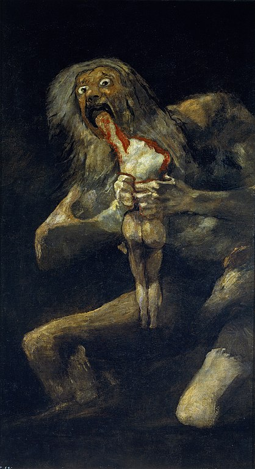
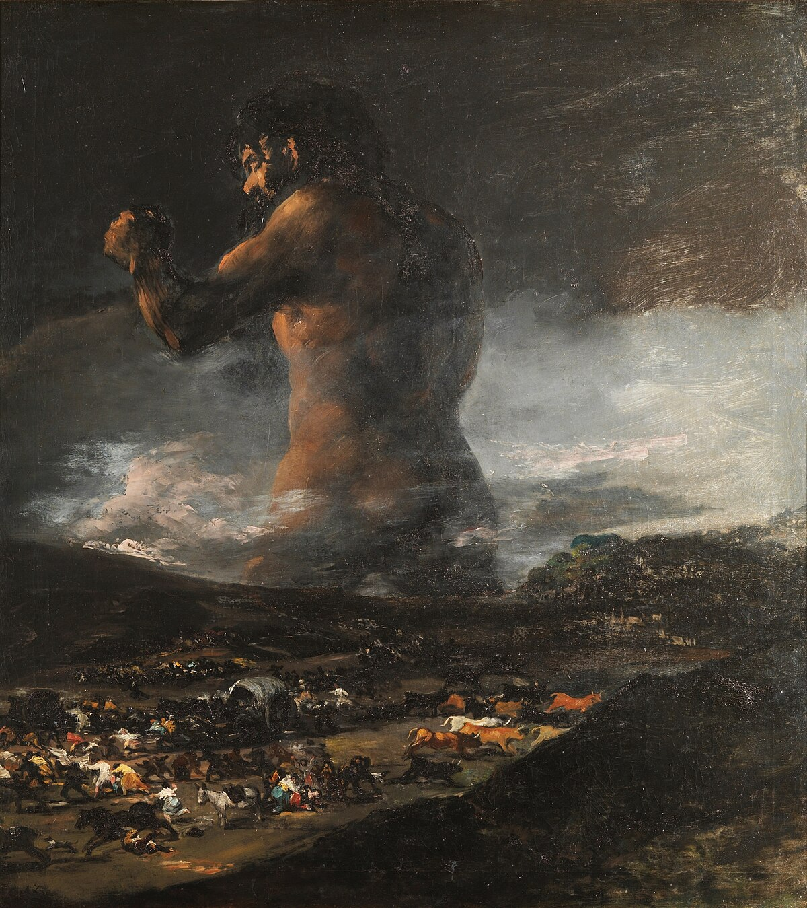
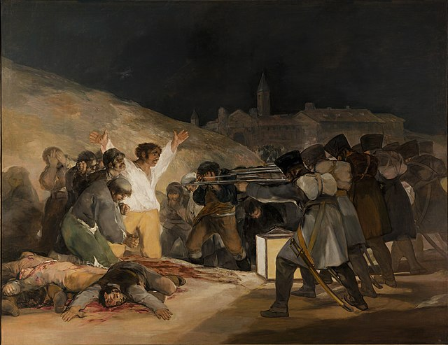
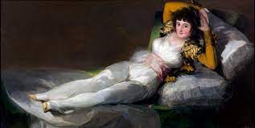
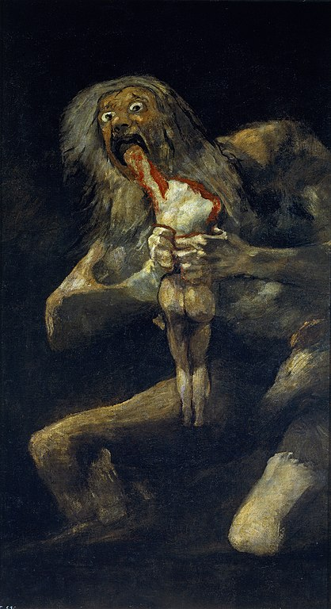
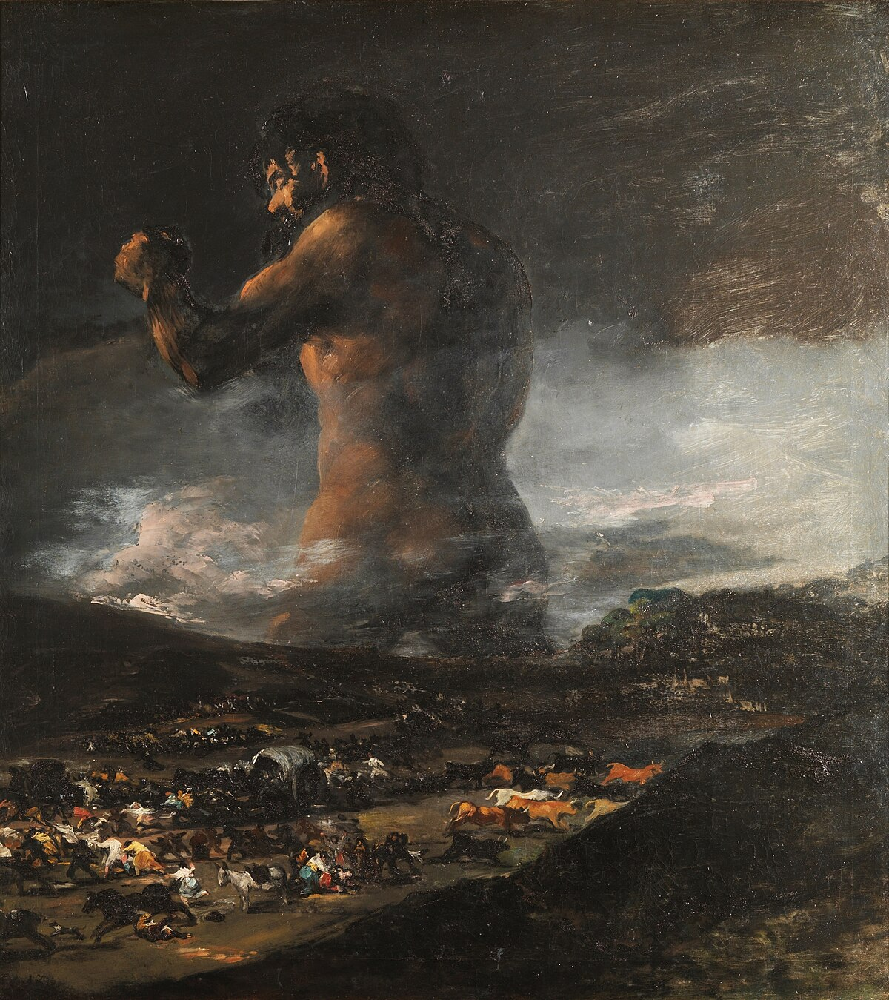
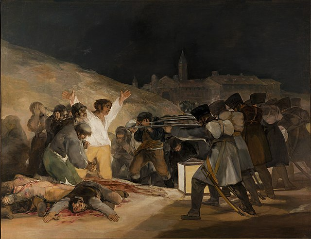
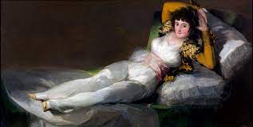

Francisco Goya
Francisco Goya nasce nel 1746 a Fuendetodos, vicino a Saragozza, in una famiglia aragonese da generazioni e appartenente alla piccola borghesia locale: il padre Jo sé è un maestro doratore, figlio di un notaio, la madre Gracia è una hidalga, erede di una famiglia di piccoli proprietari terrieri di provincia.Nel 1762 a causa dei debiti, la famiglia cede la casa di proprietà in Calle de la Moreria Cerrada e va a vivere in affitto, riuscendo comunque a mantenere i figli negli studi. Il giovane Francisco a 14 anni va a studiare come apprendista a Saragozza, presso il pittore José Luzán y Martínez formatosi a Napoli, poi si sposta a Madrid diventando allievo del pittore di corte Francisco Bayeu. Dotato di eccezionale talento, da allievo diventa collaboratore, associandosi poi allo studio Francisco e Ramón Bayeu y Subias.Studia l'opera di Tiepolo attivo a corte in quegli anni e nel 1769 decide di completare la propria formazione partendo per l'Italia a proprie spese.Si reca a Venezia, Siena, Napoli e infine a Roma nel 1771, anno in cui torna a Saragozza dove ottiene il primo lavoro importante: realizzare degli affreschi per la basilica Nuestra Señora del Pilar, lavoro che lo impegna a fasi alterne per i dieci anni successivi con uno stile barocco debitore verso Tiepolo.
 






